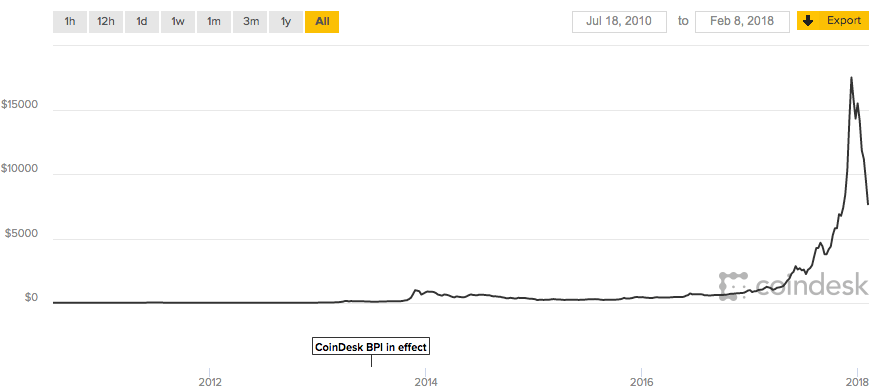

Bitcoin and Blockchain
"目前的阶段就像 2000 年 PC 转向互联网时代，大量的 PB / VB / Delphi 程序员要么继续学习，要么被淘汰。而现在是互联网转向AI、物联网和区块链"
我们将聊哪些内容
- 货币的演进
- 什么是比特币
- 比特币发展史
- 比特币交易
- 区块链
- 挖矿与共识
- 比特币安全
我们不聊哪些内容
- Alt Coin 竞争币与山寨币
- Ethereum 以太坊
- Elliptic Curves Cryptography 椭圆曲线加密
- Digital Signatures (ECDSA) 数字签名
货币的演进
以物易物

实物货币

符号货币

无现金社会

中心化的网联
什么是比特币
什么是比特币
比特币诞生
- 2008 年化名“中本聪”的人发表了《Bitcoin: A Peer-to-Peer Electronic Cash System》，描述了一个完全去中心化的电子现金系统
- 2009 年一群工作量不饱和的程序员根据这篇论文，修订并发布了比特币网络
- 2011 年“中本聪”退出公众视野，比特币网络由社区维护和发展
比特币发展史
2013 我们讨论比特币
网友:
- “有多少人接受使用外星人的货币来买你的房子和汽车？”
- “Q币可以买到 TX 的服务！而比特币什么也买不到！一文不值！”
2013 - 2017
5 年后的今天
新闻:
比特币交易
言归正传
地址与钱包
- 比特币的所有权是通过密钥，地址和签名来确立的
- 在交易中，收款方的地址为其公钥的数字指纹
- 一个人可以有多对密钥，钱包是这些密钥的容器
交易模板

交易链
每一次交易是比特币所有权的转移
常见交易形式
交易记录查询
UTXO
- Unspent Transaction Outputs 未消费交易输出
- 每笔交易的输入是将被消耗的 UTXO (Coinbase 除外)
- 每笔交易的输出是被新创建的 UTXO
- UTXO 最小单位是 Satoshi (0.00000001 BTC)
- 比特币世界没有记录用户的余额，只有分散在若干交易中的 UTXO，比特币钱包通过扫描区块链聚合属于用户的所有 UTXO 来计算余额
交易费
- 每笔交易总输入和总输出的差额作为交易费
- 作为矿工的奖励
- 按照交易尺寸，以千字节计算得来，与交易额无关
- 是矿工处理交易的优先级因素之一
- 钱包会根据网络中最近交易自动计算恰当的交易费
交易费估算
锁定和解锁脚本
- 比特币客户端使用一种基于堆栈的，非图灵完备的脚本语言来验证交易
- 交易验证依赖于两类脚本: 锁定和解锁脚本
一次 P2PKH 交易的脚本验证过程
比特币网络中的大多数都是 P2PKH (Pay-to-Public-Key-Hash) 交易

区块链
区块与区块链
- 区块是一种聚合了交易信息的容器数据结构
- 每个区块都会指向一个父区块，形成一个有序链表
- 区块链就是比特币世界中的公共账簿
区块结构
| Size | Field | Description |
|---|---|---|
| 4 bytes | Block Size | The size of the block, in bytes, following this field |
| 80 bytes | Block Header | Several fields form the block header |
| VarInt | Transaction Counter | How many transactions follow |
| Variable | Transactions | The transactions recorded in this block |
区块头
| Size | Field | Description |
|---|---|---|
| 4 bytes | Version | A version number to track software/protocol upgrades |
| 32 bytes | Previous Block Hash | A reference to the hash of the previous block in the chain |
| 32 bytes | Merkle Root | A hash of the root of the merkle tree of this block’s transactions |
| 4 bytes | Timestamp | The approximate creation time of this block |
| 4 bytes | Difficulty | The Proof-of-Work algorithm difficulty target for this block |
| 4 bytes | Nonce | A counter used for the Proof-of-Work algorithm |
区块的连接
创世区块
区块链中的第一个区块创建于 2009 年，称为创世区块。创世区块中包含了一个彩蛋，在其 Coinbase 交易中包含这样一句话：“首相第二次对处于崩溃边缘的银行进行紧急救助”，这是当天泰晤士报的头版，也是对现有货币制度的嘲讽
Merkle Tree

Merkle Tree
Even number of nodes
Merkle Path
Merkle Tree 效率
| Number of Txs | Approx. size of block | Path size (hashes) | Path size (bytes) |
|---|---|---|---|
| 16 txs | 4 KB | 4 hashes | 128 bytes |
| 512 txs | 128 KB | 9 hashes | 288 bytes |
| 2048 txs | 512 KB | 11 hashes | 352 bytes |
| 65535 txs | 16 MB | 16 hashes | 512 bytes |